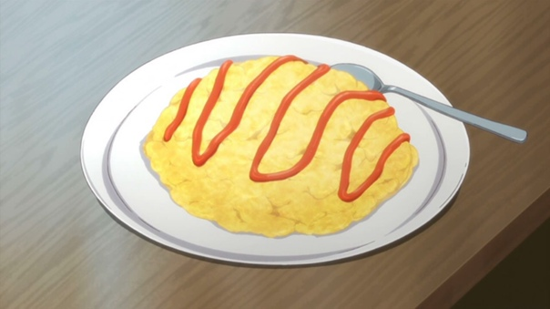

Назад

Воздушный омлет Омурайсу из аниме "Сад изящных слов"
Ингредиенты:
- Яйцо куриное 1-2 штуки
- Молоко– 2-3 большие ложки – 2 г
- Отваренный белый рис– 4 большие ложки
- Колбаса или куриное филе– 50-70 г
- Кетчуп или томатная паста– 2 столовые ложки (+сверху для украшения)
- Зеленый горошек– 2 столовые ложки
- Зелень (укроп, петрушка) по вкусу
- Растительное масло для обжаривания
- Соль, перец по вкусу
Способ приготовления:
- Сварите рис и нарежьте мелко зеленый лук.
- В глубокую миску положите сваренный рис, кацуобуси и зеленый лук. Все ингредиенты хорошенько перемешайте.
- Полученную массу разделите на 4 равные порции, каждую заверните в пищевую пленку и сформируйте их в треугольную форму.
- Снимите пищевую пленку и положите на тарелку.